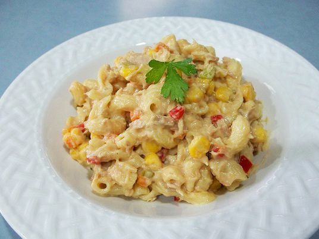

Tuna Mornay

creamy tuna mornay
A nice simple meal for the family that can be add to pasta or rice
30 minutes
Ingredients
- 1 large can Tuna
- 2 Tablespoons Butter
- 1 tablespoon plain flour
- 300ml milk
- curry powder teaspoon
Steps
- Add butter to saucepan on light heat until melted
- Remove from heat
- Add flour and mix making a paste
- slowly add milk mixing continually making the paste
- place on low heat
- Add curry powder, pepper and salt
- pour in the rest of the milk
- add tuna
- stir until cooked
- serve with rice or pasta